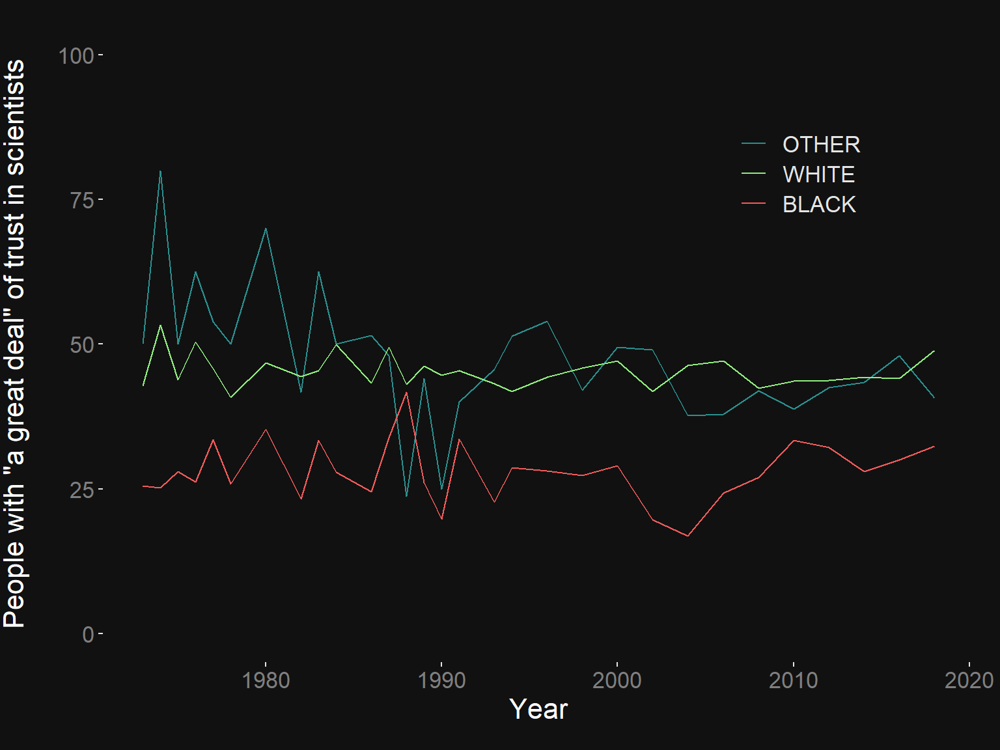
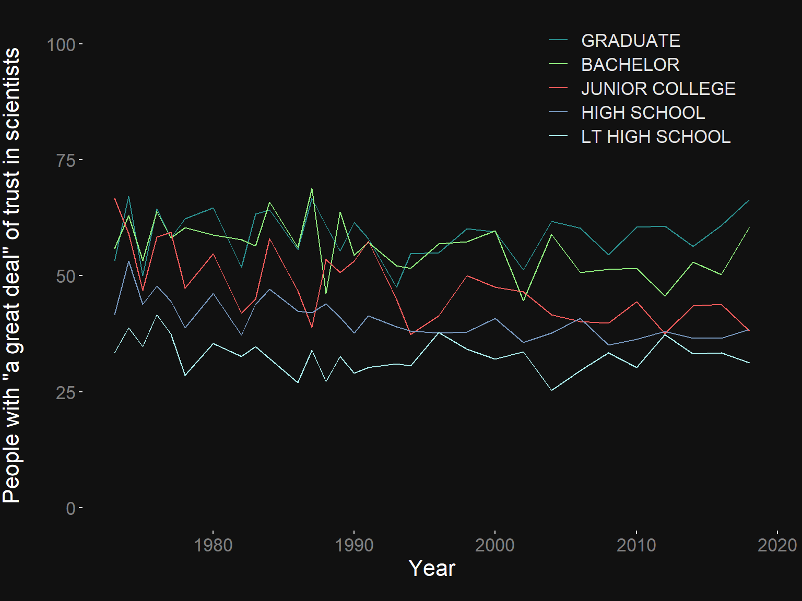
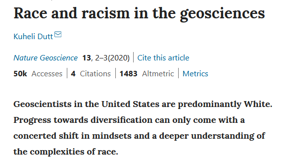

From printing press to pdf, the limits of papers in scholarly publishing and open science
Matthew Ross
7/21/2020
Talk overview
What is the purpose of open science?
- Are we achieving this purpose or these purposes?
Can papers as the foundational form of scholarly communication accomplish these goals?
- What alternatives do we have or should we have?
Disclaimer
r"(raw)"
Evan Goldstein helped form, edit, and improve this talk

Why open science?
One term, five purposes Fecher and Friesike 2014

Are we achieving these purposes?
COVID-19 response
Race and racism in the geosciences (Dutt 2019)
COVID-19 research and outreach
Public trust
Data from General Social Survey

Education correlates with trust

Aristocratic roots
Original journal Philosophical Transactions of the Royal Society of London created in 1665 by Henry Oldenburg
Motivation: attribution and sharing within elite, Royal Society
Amazing paper by Jean-Claude Guedon, 2001

Oldenburg’s long shadow
Publishing != Knowledge sharingPublishing == "property rights"almost.equal(1665_publishing,2020_publishing)
Publishing’s history helps create our exclusionary present
-
Why not change?
Publishing lock-in
From hiring and T&P perspective,
value(scientist) = publishing + grantsMany top-tier journals are old and venerable and… run by private for-profit companies
But we all publish there because most immediate/necessary way to help our careers
Consequences of publishing lock-in
The traditional (pdf-like) paper is primal
Not the best way to reach broad audience
Well-suited to ceding control to for-profit publishers
Wildly limiting compared to other approaches
~ $10 billion in profit for publishing companies Aspeti et al., 2019

More consequences
Closed peer-review allows for biased, sexist, racist, exclusionary ‘reviews’ with little or no consequences to perpetrators
Open access does not solve capitalist or pdf-primacy issues
Shifting model to researchers paying for open access creates…

Can we achieve open science goals with pdfs as primary output?
Video abstracts
Plain language summaries
Key points
Science journalism

What should we do instead?
Things that I hope disappear from #scholcomm in the next 10 - 20 years:
— Ashley Farley (@ashleydfarley) July 21, 2020
-paywalls
-journal/article as a main container of info
-closed peer review
-faulty metrics
-writing solely for an “academic” audience
-authorship order
-highly selective journal models
Preprints
Still traditional paper focus but
Removes traditional peer-review barrier
Increases speed to publishing and pace of science
Can cleanly and immediately solve open acces issues Sever et al., 2019
Requires training ourselves and society to understand what preprints are and aren’t

More SciComm?
Radiolab, The Last Archive etc…
Yes! but also…
Peer-reviewed public engagement?
Where are the people we want to reach?
Are we producing content on these platforms?
Is this content valued, supported, and primary (not supportive or dependent on pdf paper)?
Do we as scientists always need to read a paper to understand an idea?
Would other content platforms help us understand more ideas? more quickly?
Stop-motion movies of PhDs
As a scientist I've had an “elevator speech” prepared for a few years now.
— Dr. Emily Fairfax (@EmilyFairfax) February 17, 2019
This year I made an “elevator video” & let me tell you: people enjoy seeing my research way more than just hearing about it!
So what do #beavers have to do with #wildfire? Watch (with sound) & find out! pic.twitter.com/axc523sRgq
Interactive hydrograph visualizers
Data visualization videos

Podcasts
🚨Cool #scicomm podcast alert!🚨 Gather, Share, Teach is a podcast by @DukeU REU student Tyler Edwards that tells behind-the-scenes stories from @HubbardBrookNH. New episodes air often! Catch it on google and spotify: https://t.co/DXVtjSxzad pic.twitter.com/MBp7i89fzr
— Jenny Bower (@jennyspatial) July 9, 2020
And more!
These formats will connect scientists to people in more direct and transparent ways
They will also make our science easier to understand for ourselves
And escape some traditional publishing problems

Conclusions
Science and open science needs more public facing scholarly communication
The paper is great, but limited, and deserves some competition from other forms
These new forms may help alleviate some of the isolated, exclusionary, and capitalist problems associated with modern peer-review publishing
Wanna make something new and weird? Let me know!